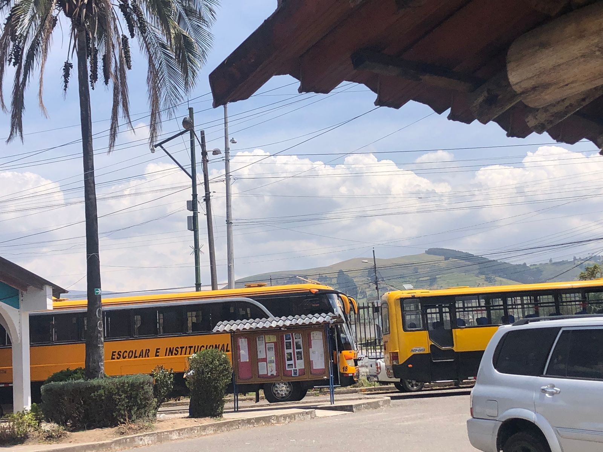
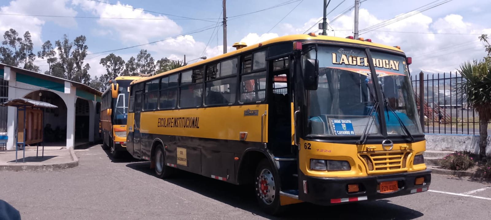
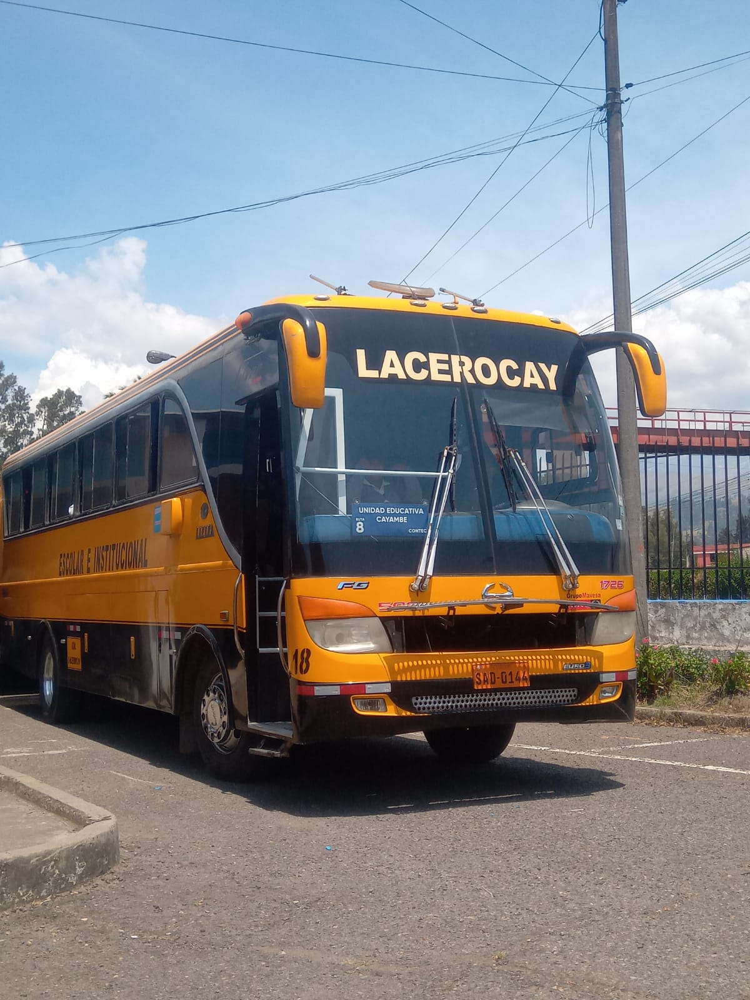

TRANSPORTE
El transporte escolar sirve para poder transladar de manera segura y eficiente a los estudiantes entre
sus hogares y la institucion educativa, además promueve la puntualidad y brinda la tranquilidad a los padres
asì garantizando que sus hijos lleguen a tiempo de forma segura.Es importante que las Unidades Educativas cuenten
con un sistema de transporte eficiente, que incluya planificación adecuada, mantenimiento de los vehículos
y personal capacitado para garantizar un servicio de calidad.
Las siguientes rutas son:
Cayambe
Juan Montalvo
Rio Blanco



REGRESAR